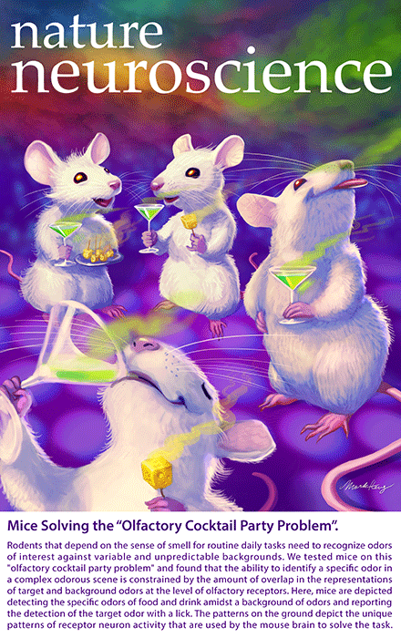

News Archives : 2014 : Detection of Target Odors from Mixtures [Murthy Lab]
by Dan Rokni
August 4, 2014
Natural environments are rich with sensory stimuli. To make sense of the sensory clutter, animals must segregate objects of interest from ever varying backgrounds. Our visual system is continuously confronted with scenes that include multiple objects and uses spatial cues among others to parse images. Similarly, our auditory system is often required to segregate the voice of a single speaker in a room full of people talking, and uses spatial and dynamical cues to do so. Many species, including most mammals use the sense of smell for many daily functions such as finding food and avoiding predators. To perform these daily tasks they must detect and identify specific odors that are embedded in mixtures of background odors. What types of cues are used by macrosmatic animals for figure-ground segregation is unknown. In fact even the extent of the behavioral ability to perform such tasks and how this ability depends on the chemical composition of the figure and the background is unknown.
To answer these questions we trained mice to detect specific odorants embedded in random mixtures and found that mice can perform very well on such a task and that their performance drops steadily with increasing background components. We found that chemicals sharing the same functional group as the target act as strong maskers. In the visual and auditory systems the difficulty of figure-ground segregation depends strongly on the similarity between features of the figure and the background. One would find a red circle in a blue background with higher fidelity and speed compared to a red circle in a magenta or pink background. A more general description of the relationship between figure and background similarity and behavioral performance, is typically provided by plotting a psychometric curve in which the behavioral performance is plotted against some parameter of the stimulus (in this case - the difference in wavelength between the figure and background). Olfactory stimuli cannot be parameterized with such ease and therefore defining the similarity between any two stimuli is daunting.
Instead of characterizing the similarity of odor stimuli in terms of their physico-chemical features, we used the neural representation of the odors at the earliest stage of processing – the olfactory receptors themselves. We imaged responses of olfactory sensory neurons in mice expressing the genetically encoded Ca++ indicator GCaMP3 under the OMP promoter (OMP-GCaMP3). These mice, generated in the lab of Catherine Dulac, express the Ca++ sensitive fluorescent indicator in olfactory sensory neurons and allow imaging of odor-evokes receptor neuron activity in-vivo. We then related the features of this early-stage neural representation to the behavioral performance of mice. We found that overlap between the representations of the target odorant and the background odorants predicts behavioral performance.
Our work demonstrates that, counter to a widely-held view, the olfactory system has strong analytical abilities. Relating behavioral performance to neural representations of odors by olfactory sensory neurons provided a mechanistic description of the limits of olfactory figure-ground segregation.
Read more in Nature Neuroscience or download PDF.
Read more in the Harvard Gazette
We got the cover!

This research was supported by Harvard University, National Institutes of Health (RO1DC11291) (VM) and a fellowship from the Edmond and Lily Safra Center for Brain Sciences, Hebrew University (DR).